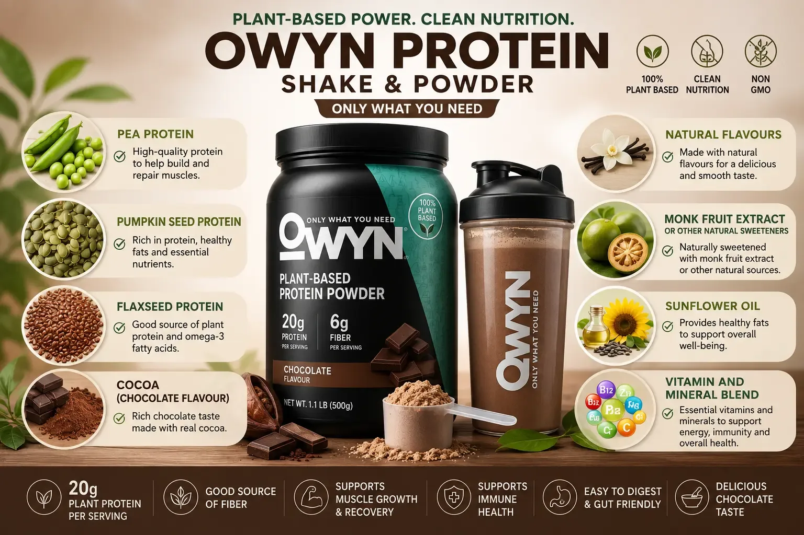

★★★★★
“I dug into OWYN protein shake ingredients and finally felt confident. Pea and pumpkin seed protein is a smart plant blend.”
Marcus Cole
Label checker
Label Details
A clear look at OWYN ingredients, nutrition facts, calories, and what goes into OWYN protein powder formulas.

People searching for owyn protein shake ingredients usually want to know what is inside each ready-to-drink bottle. OWYN focuses on plant-based protein sources rather than whey. Common ingredients across many formulas include pea protein, pumpkin seed protein, and flaxseed ingredients. For a quick overview first, see the ingredients section on the homepage.
If you are comparing labels, also review the full owyn ingredients list for sweeteners, fiber sources, vitamins, and flavoring systems. Exact OWYN ingredients can change by flavor and product line, so always check the package you buy.
OWYN protein shake nutrition facts typically highlight protein, calories, sugar, fiber, and micronutrients. Looking up owyn nutrition facts helps you match a shake to your daily goals — whether you want a light snack shake or a more complete nutrition option.
Because formulas differ, use the nutrition facts panel on your specific product for the most accurate numbers.
Searches for owyn protein shake calories are common among people tracking energy intake. Calorie counts vary by product type and flavor. Some OWYN shakes are designed as lighter protein snacks, while nutritional or meal-style options may provide more calories and broader nutrient coverage.

If you prefer mixable powder, review owyn protein powder ingredients the same way you would check a shake label. Powder formulas are built around plant proteins and may include different supporting nutrients than ready-to-drink shakes. For powder shopping guidance, see our protein powder page.
Customer Reviews
Readers share why the ingredient list and nutrition facts matter to them.
“I dug into OWYN protein shake ingredients and finally felt confident. Pea and pumpkin seed protein is a smart plant blend.”
“The nutrition facts are easy to understand. I can track protein, calories, and fiber without guessing.”
“Clear OWYN ingredients and solid protein per bottle. That transparency is why I keep buying it.”